本校在學學生與現職教職員，均可透過 GitHub Education 驗證，免費取得 Copilot Pro 完整功能。
在學學生（大學部、碩士班、博士班）通過 GitHub Education 驗證後，可免費使用 Copilot Pro，效益持續至畢業為止。
現職教師、研究人員及學校職員，通過 GitHub Education 教師身分驗證後，可持續免費享有完整 Copilot Pro 功能。
無限次程式碼補全、Copilot Chat 對話、多模型選擇（GPT-4o、Claude 等），支援 VS Code、JetBrains、Vim 等主流 IDE。
| 功能 | Free | Pro 教育版（學生） | Pro 教育版（教師） |
|---|---|---|---|
| 程式碼補全（inline） | 每月 2,000 次 | 無限制 | 無限制 |
|
Premium requests （與付費版 Pro 相同上限） |
每月 50 次 | 每月 300 次 | 每月 300 次 |
| Copilot Chat（基礎模型） | 每月 50 次 | 無限制 | 無限制 |
|
進階 AI 模型手動選擇 （Claude Sonnet/Opus、GPT-5.4 等） |
受限 | ⚠️ 2026/3/12 起移除 | ✅ 可手動選擇 |
@xxx.edu.tw）@xxx.edu.tw）前往 github.com，若尚未有帳號請先完成免費註冊。使用個人常用 email 建立帳號即可。
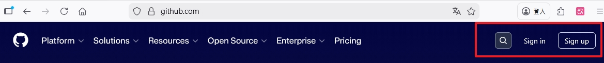
前往
Settings → Emails，點擊「Add email address」，輸入學校
email（帳號@stu.edu.tw）並完成信箱驗證（收信點連結）。
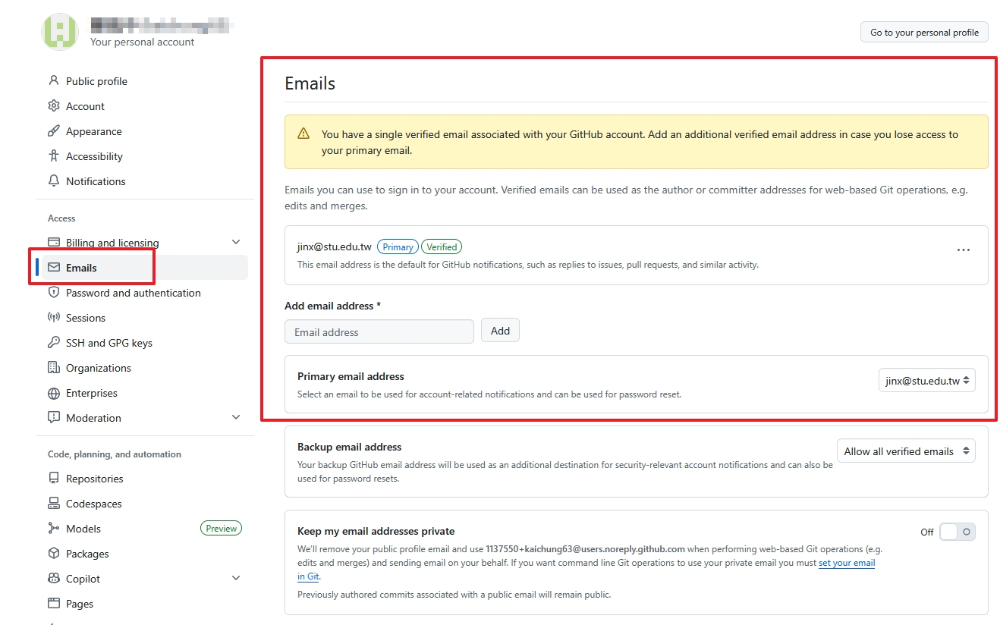
前往 education.github.com，點擊頁面中的「Join GitHub Education」按鈕。
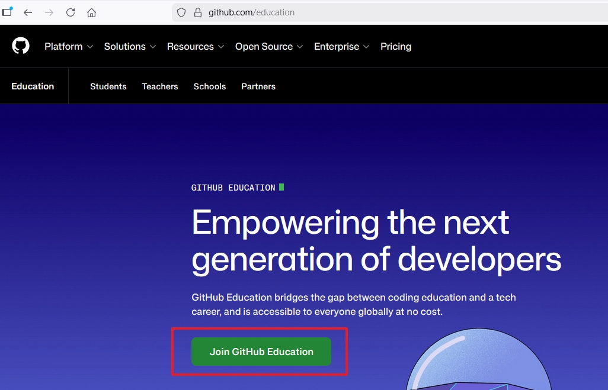
也可直接前往 github.com/settings/education/benefits，在「GitHub Education」區塊點擊「Start an application」。
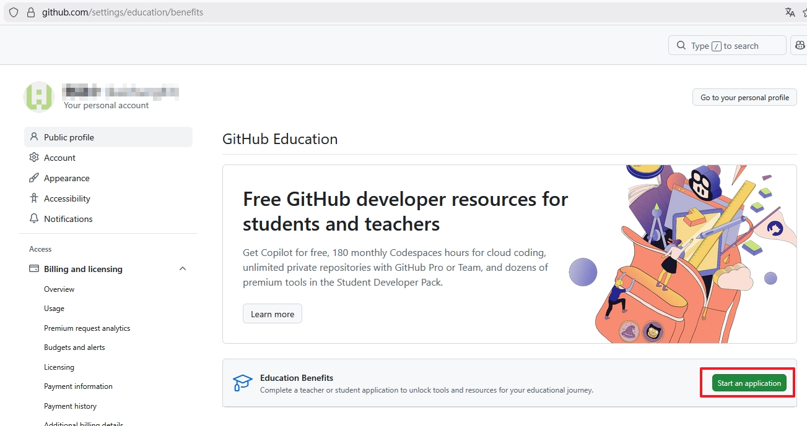
選擇「Student（學生）」或「Teacher（教師）」，搜尋並選擇學校名稱、選擇學校信箱，填寫 GitHub 的使用用途。
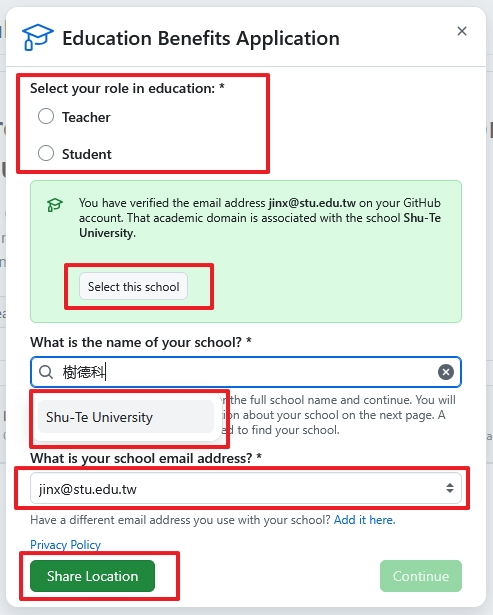
點擊上傳區域，上傳學生證、課表或在學證明等照片，確保文字清晰可辨後，點擊「Submit application」送出。
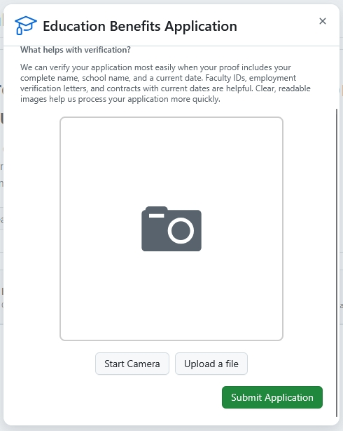
上傳文件後，若出現如下錯誤提示，代表 GitHub 偵測到您的 IP 位置與學校地理位置不符。台灣許多大學透過 TANet（台灣學術網路）對外連線，出口 IP 位於台北，即使人在校園內也可能觸發此警告，屬正常現象。
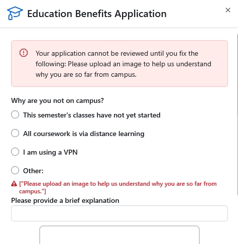
送出後若收到拒絕通知，頁面會顯示紅色「Rejected」狀態與原因清單。不必擔心，依照以下步驟修正後重新申請即可通過。以下為最常見的拒絕原因與解決方法：
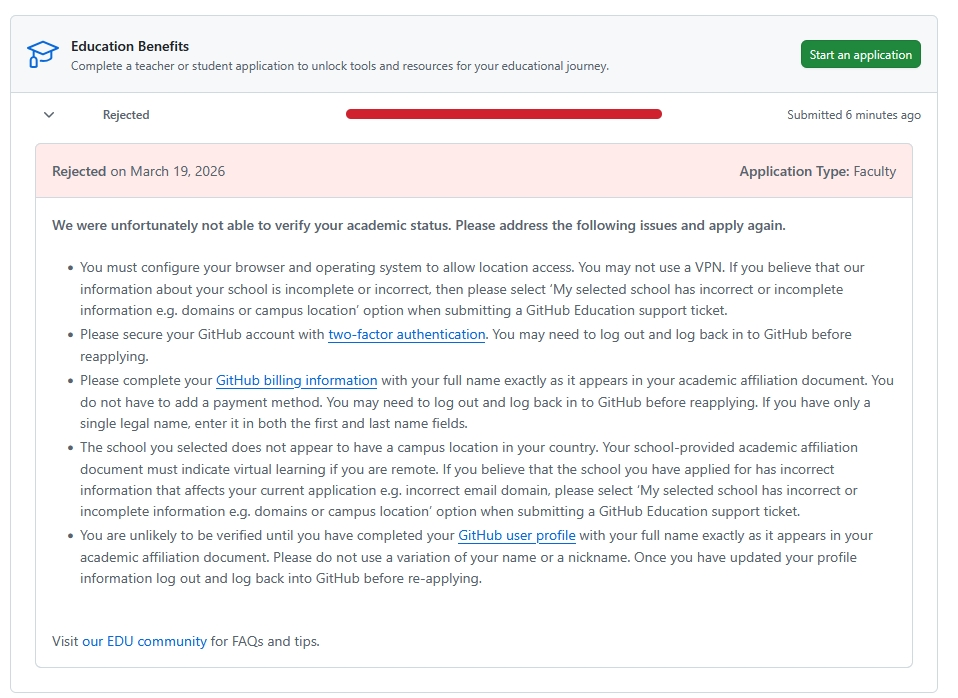
| GitHub 顯示的拒絕原因 | 解決方法 |
|---|---|
| Please complete your GitHub billing information with your full name exactly as it appears in your academic affiliation document. | 最關鍵：前往 Payment information 填寫與證件完全一致的真實姓名（見下方步驟） |
| You are unlikely to be verified until you have completed your GitHub user profile with your full name. | 前往 Settings → Public profile，將「Name」欄位改為與證件一致的真實姓名 |
| Please secure your GitHub account with two-factor authentication. | 前往 Settings → Password and authentication，開啟雙重驗證（2FA） |
| You must configure your browser and operating system to allow location access. You may not use a VPN. | 關閉 VPN；或選擇 Other 並說明為 TANet 連線問題（參考上方步驟） |
前往 Settings → Billing and licensing → Payment information，依序填寫以下資訊：
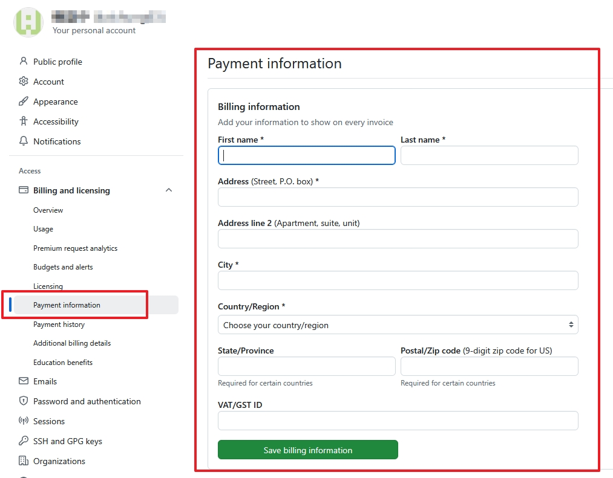
修正後重新送出，頁面應顯示綠色進度條與「Pending」狀態，表示申請已送出並進入人工審查，靜待 GitHub 通知信即可。
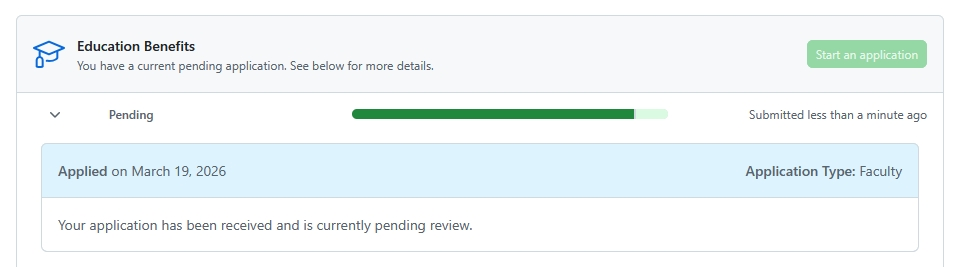
送出後 GitHub 進行自動或人工審核。學生通常 數小時～3 天可得到結果；教師有時需 1–14 個工作天。
通過審核後，頁面將顯示綠色「Approved」狀態與以下重要資訊：
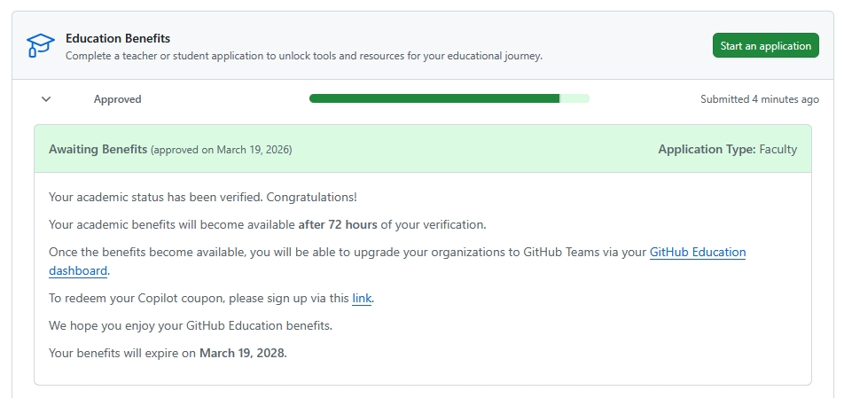
約 72 小時後，再次前往 github.com/settings/education/benefits，進度條會變成綠色 100%，狀態由「Awaiting Benefits」升級為「Verified (benefits available)」，並顯示「Coupon applied」與到期日。
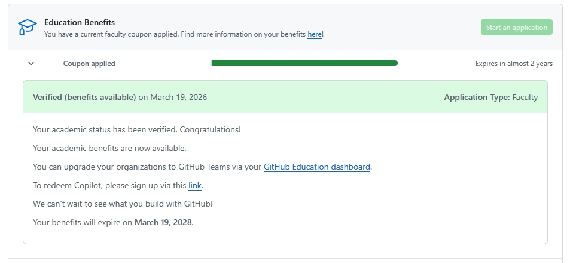
Copilot settings 右上方顯示「Free」標籤，Getting started 進度為 0/3，代表 Pro 福利尚未啟用。
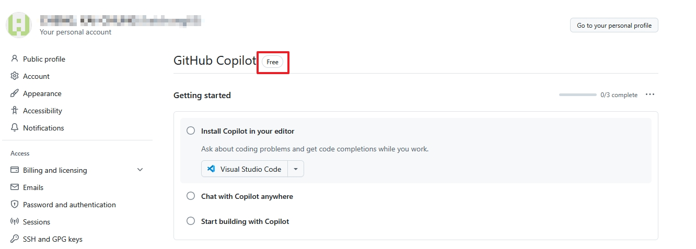
點擊 Approved 頁面的 link 連結後，出現「Try Copilot Pro for 30 days free」與「Upgrade now」按鈕，請勿點擊，關閉此頁面等 72 小時後再操作。
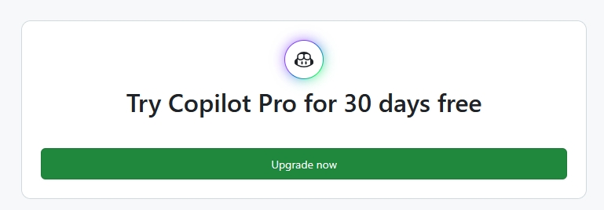
前往 github.com/settings/education/benefits，確認進度條已變成綠色 100%，且左側狀態顯示「Coupon applied」。找到頁面中的「To redeem Copilot, please sign up via this link」，點擊 link 後進入「Use GitHub Copilot for free」頁面。
若教育資格已認定，頁面將顯示您符合免費資格的提示，點擊按鈕完成啟用。
啟用後，點擊右上角個人大頭貼 → 選擇「Copilot settings」，或直接前往 github.com/settings/copilot。
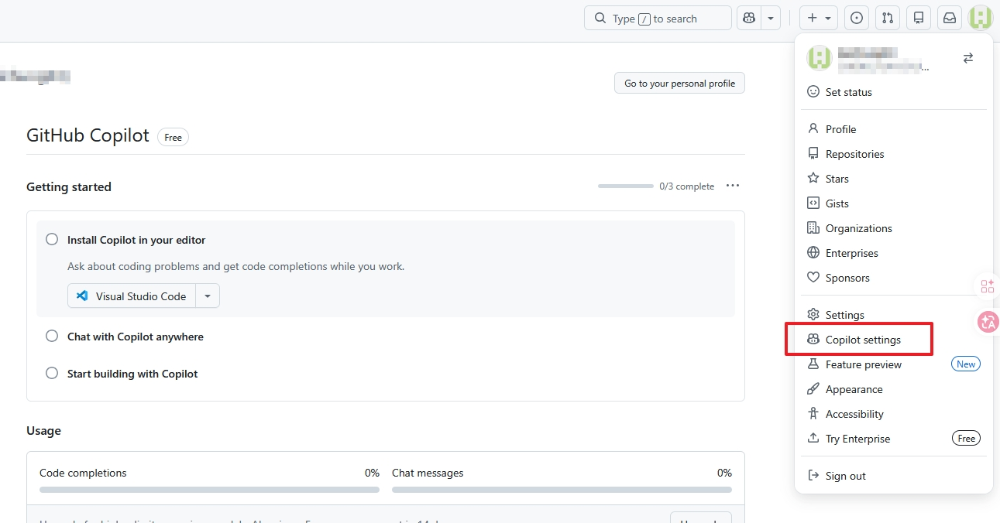
頁面頂部將顯示「GitHub Copilot Pro is active for your account」與「You currently have an active Copilot Pro subscription.」訊息，表示啟用成功。
頁面下方的 Usage 區塊顯示本月 Premium requests 使用量（初始為 0.0%），每月月初重置。Features 區塊可看到 Editor preview features、Copilot Chat in GitHub.com、Copilot CLI、Copilot in GitHub Desktop 等功能皆為「Enabled」。
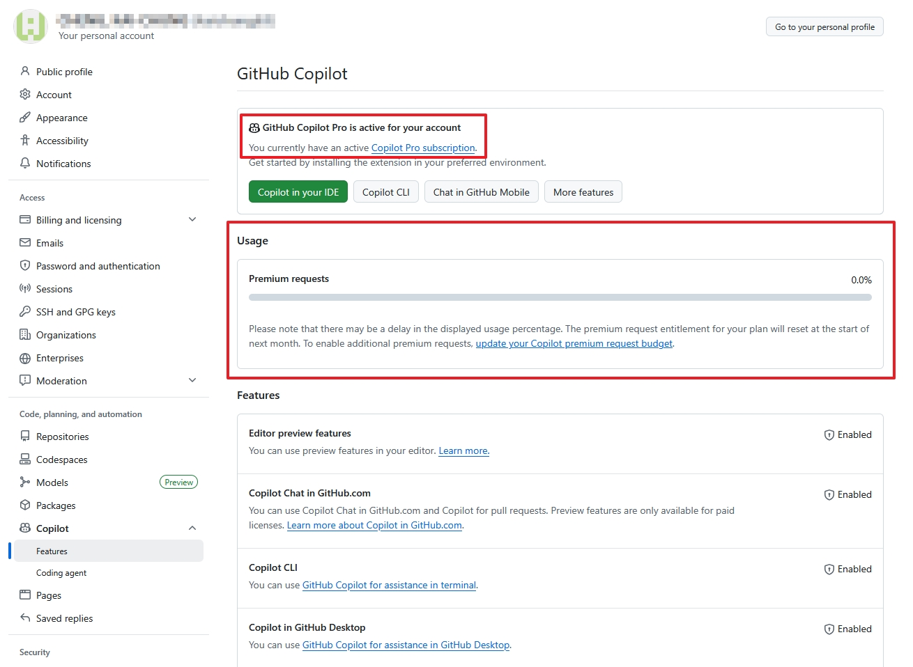
若尚未安裝，請前往 code.visualstudio.com 下載對應作業系統版本（Windows / macOS / Linux）。
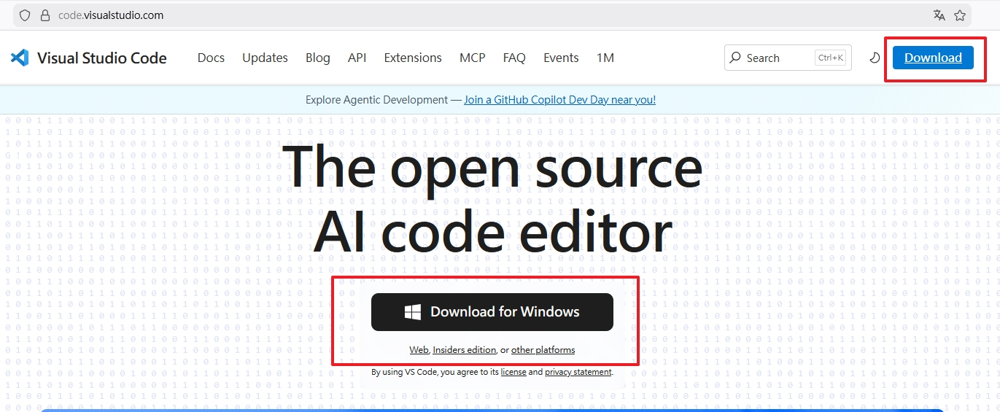
開啟 VS Code，按
Ctrl+Shift+X（macOS：Cmd+Shift+X）開啟擴充套件面板，搜尋「GitHub Copilot」，安裝發行者為 GitHub 的官方套件。
安裝完成後，VS Code 左側活動列底部帳號圖示（Accounts）點擊後，選擇「Sign in with GitHub to use GitHub Copilot」。
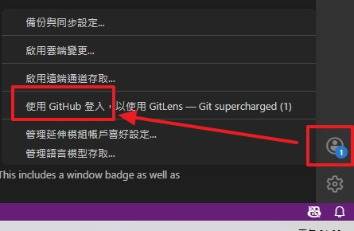
VS Code 將自動開啟瀏覽器，依序出現以下兩個畫面：
【畫面一】選擇授權帳號：出現「Authorize Visual Studio Code」頁面，顯示目前已登入的 GitHub 帳號。確認帳號正確後，點擊「Continue」按鈕。若要改用其他帳號，點擊「Use a different account」。
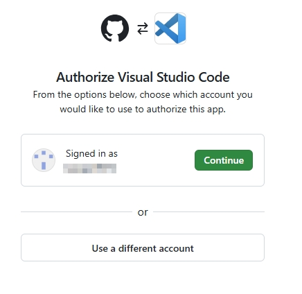
【畫面二】允許開啟 VS Code：瀏覽器跳出「要開啟 Visual Studio Code 嗎？」的確認對話框，並顯示「Launching Visual Studio Code」頁面。點擊「開啟 Visual Studio Code」返回編輯器。
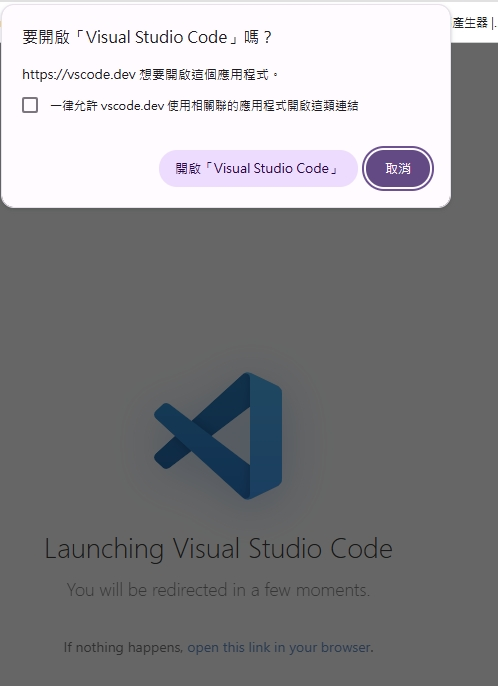
授權後點擊瀏覽器「Open Visual Studio Code」返回。右下角狀態列的 Copilot
圖示顯示正常（無警示符號），開啟程式碼檔案輸入幾個字即可看到灰色
AI 補全建議，按 Tab 接受。
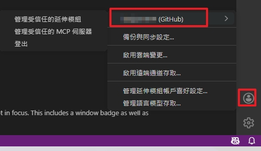
【功能一】Copilot Chat 對話側欄：點擊 VS Code 右上角工具列的 Chat 圖示（對話泡泡形狀，如下圖紅框處）即可開啟。
【功能二】Chat 側欄介面：開啟後左側或右側會出現
Chat
面板，顯示歷史對話紀錄（SESSIONS）與底部輸入框。可直接輸入中文問題，並從下拉選單選擇
AI 模型（如 Claude Sonnet 4、GPT-4o 等）。按
Tab 接受程式碼補全建議，Esc 取消。
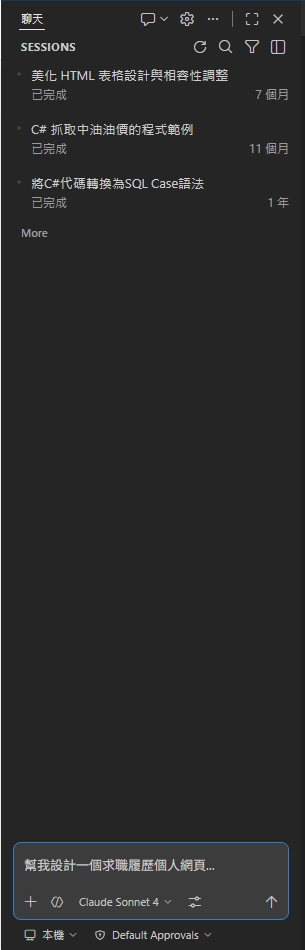
點擊左側活動列的 Copilot Chat 圖示，打開對話視窗，用自然語言詢問程式問題。
選取程式碼後按
Ctrl+I（Cmd+I），可在行內直接對 Copilot
下指令修改或解釋程式碼。
按 Ctrl+Shift+P（Cmd+Shift+P），輸入
Copilot 可查看並執行所有相關指令。
若申請遇到問題，歡迎來信或親洽服務台。
📧 Email：info@stu.edu.tw
📍 地點：圖資大樓B1F
帳號或資格問題，可直接聯繫 GitHub 官方：
🔗
support.github.com
🔗
education.github.com